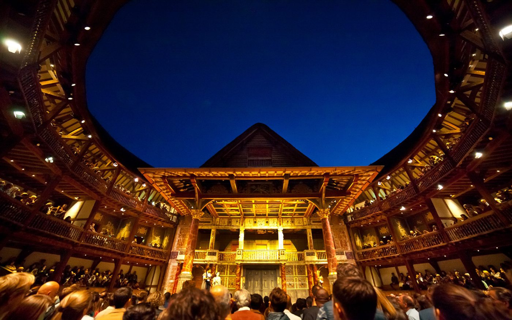

The "Globe" theater
The famous theatre where Shakespeare's plays came to life
.jpg)
"All the world's a stage, and all the men and women are just actors"
"Весь мир - театр, и люди в нем - актеры"
History of the theater
The first "Globe" was built
The theatre was built on the south bank of the Thames from the demolished Theatre Theatre. Shakespeare was one of the co-owners.
Location: Bankside, London
Capacity: Up to 3000 spectators
Form: Round, 30 meters in diameter
Fire in the theater
During a production of "Henry VIII," a theater cannon set fire to the thatched roof. The theater burned completely within two hours.
Cause: Sparks from the theater cannon
Well known fact: No one died except one man whose pants caught fire.
The Second "Globe"
The theater was rebuilt on the same site, but with a tiled roof instead of thatched. It stood until 1642.
Changes: Tiled roof instead of thatched
Closing: 1642 (the closure of theaters by the Puritans)
Demolition of the theater
After the theatres were closed by the Puritans in 1642, the "Globe" building was demolished to make way for residential buildings.
A modern "Shakespeare's Globe"
Thanks to the efforts of American actor Sam Wanamaker, a new theatre was built 200 metres from the original site.
Initiator: Sam Wanamaker
Peculiarity: The most accurate reconstruction
Usage: Productions of Shakespeare's plays
Theatre architecture
Capacity
The theatre could accommodate up to 3,000 spectators. The poor stood in the "pit" (for 1 penny), the rich sat in the galleries (for 2-3 pennies).
Open Theater
"The Globe" was an open-air theater with no roof over the main auditorium. Performances were only given during the day.
Flags
Flags were raised over the theatre, indicating the genre of the play: black - tragedy, white - comedy, red - historical chronicle.
Stage design
The stage was richly decorated: columns, balconies, curtains, mechanical devices for special effects.
Theatre layout
Scene
She performed in the center of the auditorium, surrounded by spectators on three sides.
Yard
The area in front of the stage where the audience (groundlings) stood
Galleries
Three levels of seating for wealthy spectators
Behind the scenes
Backstage area for actors and prop storage
"Heaven"
The roof above the stage is painted with stars and celestial bodies
"Hell"
A hatch in the stage floor for the appearance of "ghosts" and "demons"
Modern "Globe"

Shakespeare's Globe Theatre
The modern reconstruction of the Globe Theatre opened in 1997. It is not just a museum, but a functioning theatre where plays by Shakespeare and his contemporaries are performed.
The theatre strives to recreate the conditions of the Elizabethan era: matinee performances, natural light, close proximity between actors and audience.
Famous productions
"Hamlet"
Shakespeare's most famous play, staged at the "Globe" in 1600–1601. Richard Burbage played the role of Hamlet.
"Romeo and Juliet"
One of the first productions at the new theater. The female roles were played by young men, as women were forbidden to perform on stage.
"Henry VIII"
A play during whose performance in 1613 the first Globe burned down. Special effects involving a cannon caused the fire.
"Julius Caesar"
A historical tragedy first performed in 1599. It is famous for Mark Antony's speech, "Friends, Romans, compatriots..."